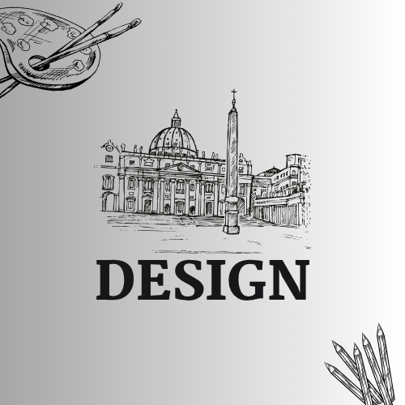

Otakatlat menyediakan berbagai materi pembelajaran untuk meningkatkan kemampuan siswa dalam bidang Design, Matematika, dan Bahasa Inggris.

Design
Kursus desain visual dan kreatif.
Math
Latihan soal dan pembahasan interaktif.
English
Belajar grammar dan speaking dengan mudah.